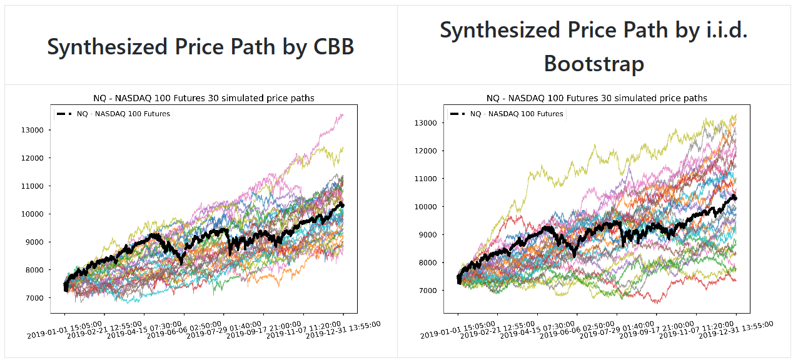

Ning Liu
Side Projects
Bootstrap Price Time Series
Mission: Explores time series bootstrapping methods to synthesize financial market price/return paths, which are useful for quantitative strategy development with robustness simulation and backtesting.
GitHub: https://github.com/0liu/bootstrap-price-time-series
Notebook: [Bootstrapping Price Time Series.ipynb]
Talks
- Performance of Delay Estimation and Range-Based Localization in Wireless Channels. (Ph.D. defense) slides
- Multi-Cell Joint Detection for TD-SCDMA Receivers. slides
- A Bayesian Bound (ZZB) for Time Delay Estimation with Frequency Hopping or Multicarrier Transmission. slides
- Ziv-Zakai Lower Bounds on Signal Parameter Estimation. slides
- GPS and Differential GPS: An Overview. slides
Publications
-
Patent
- "Multicell joint detection method in slotted code division multiple access system," US 8023486 B2, CN100401646 C
-
Journal Papers
- N. Liu, Z. Xu, and B. M. Sadler, "Geolocation performance with biased range measurements", IEEE Transactions on Signal Processing, Vol. 60, Issue 5, pp. 2315-2329, May 2012. PDF
- N. Liu, Z. Xu, and B. M. Sadler, "Ziv–Zakai time-delay estimation bounds for frequency-hopping waveforms under frequency-selective fading", IEEE Transactions on Signal Processing, Vol. 58, Issue 12, pp. 6400-6406, Dec. 2010. PDF
- B. M. Sadler, N. Liu, Z. Xu, "Ziv-Zakai bounds on time delay estimation in unknown convolutive random channels," IEEE Transactions on Signal Processing, vol. 58, pp. 2729-2745, May 2010. PDF
- N. Liu, Z. Xu, and B. M. Sadler, "Low complexity hyperbolic source localization with a linear sensor array," IEEE Signal Processing Letters, vol. 15, pp.865, Sept. 2008. PDF
- N. Liu, Y. Li and X. Wang, "The research on the detection algorithms for layered space-time codes",
ACTA ELECTRONICA SINICA (in Chinese), vol. 31, issue 11, pp. 1754-1757, Nov. 2003.
PDF
分层空时码检测算法的研究, 电子学报, 卷31第11期, 1754-1757页, 2003年11月. PDF -
Conference Papers
- B. M. Sadler, N. Liu, and Z. Xu, “Ziv-Zakai bounds for time delay estimation with frequency hopping and multicarrier signals in wideband random channels,” Proc. of IEEE Intl. Conf. on Acoustics, Speech, and Signal Proc., Dallas, Texas, Mar. 14-19, 2010. PDF
- B. M. Sadler, N. Liu, Z. Xu, and R. Kozick, "Range-based geolocation in fading environments," IEEE Proc. of Allerton Conference, Monticello, Illinois, Sept. 23-26, 2008. PDF
- B. M. Sadler, N. Liu, and Z. Xu, "Ziv-Zakai bound on time delay estimation in unknown convolutive random channels," Proc. of IEEE Sensor Array and Multichannel Signal Processing Workshop, Darmstadt, Germany, July 21-23, 2008. PDF
- Z. Xu, N. Liu, and B. M. Sadler, "A simple closed-form linear source localization algorithm," Proc. of Milcom, Orlando, Florida, Oct. 29-31, 2007. PDF